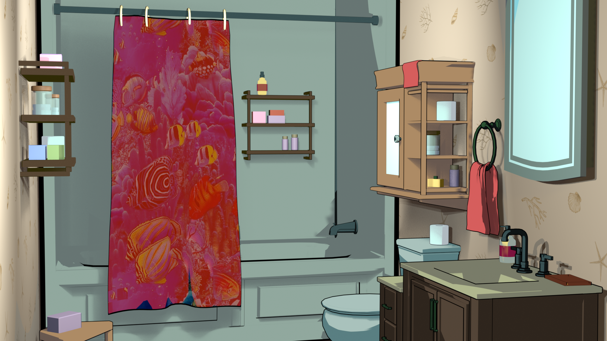
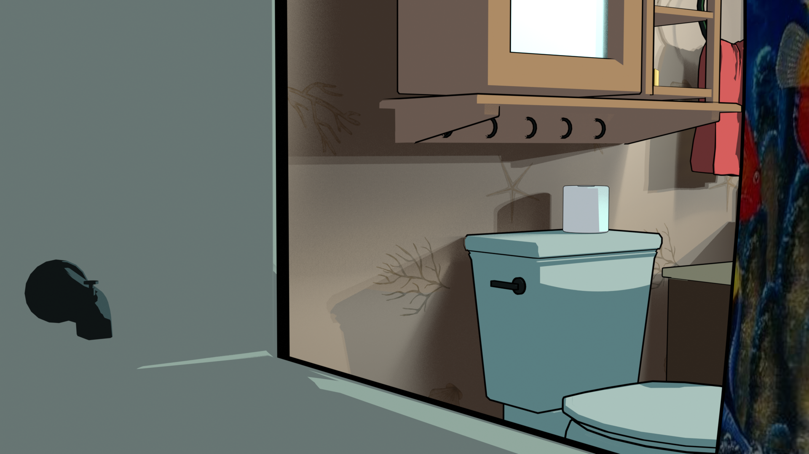
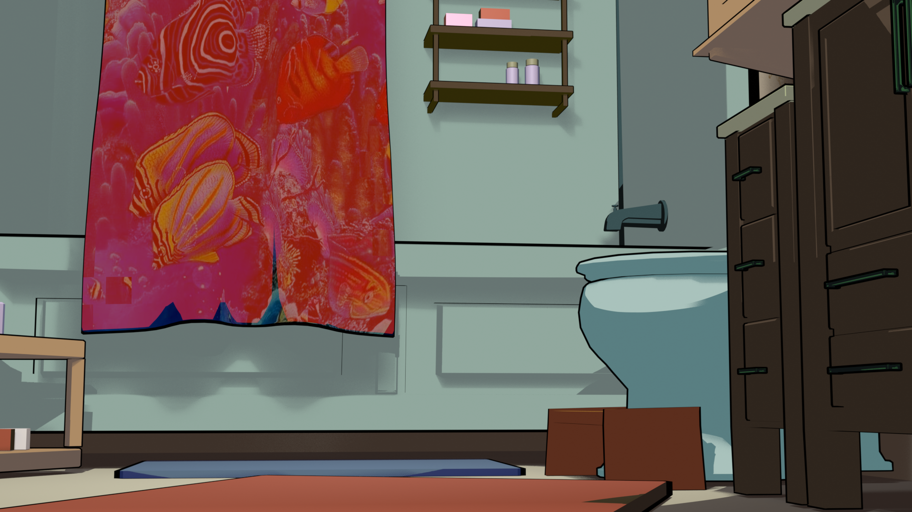
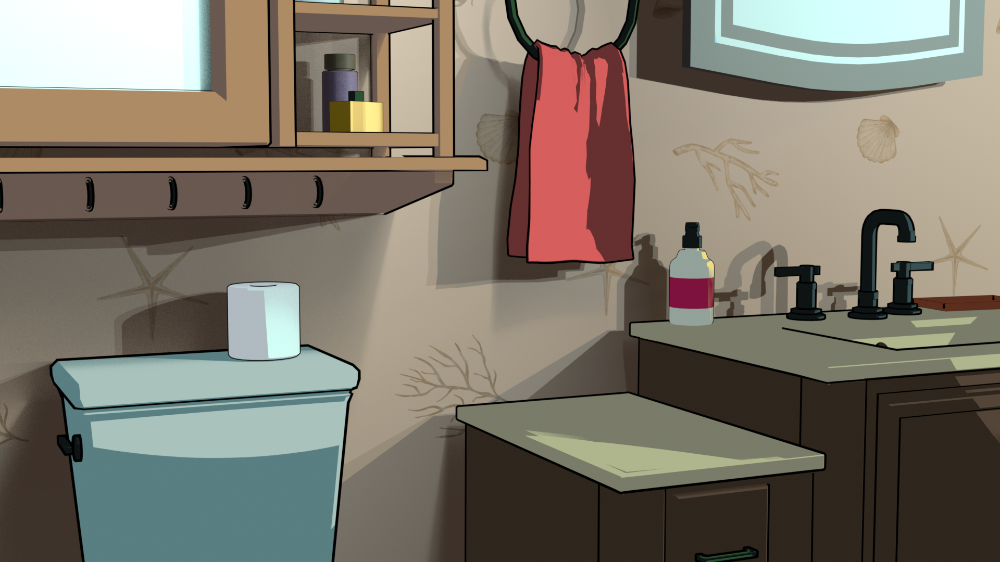
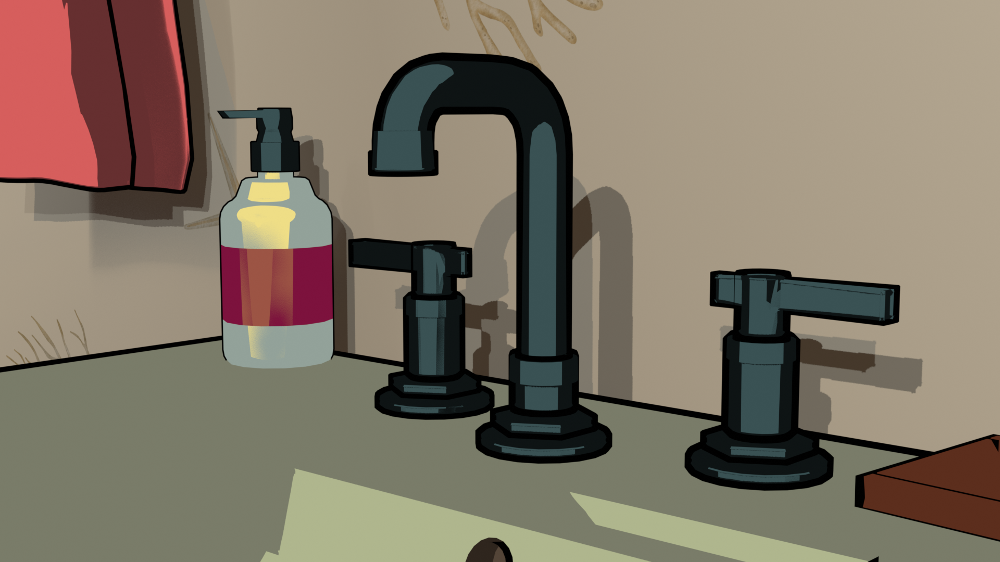
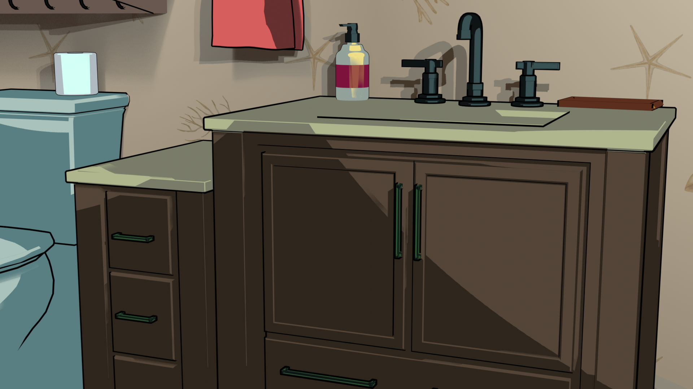
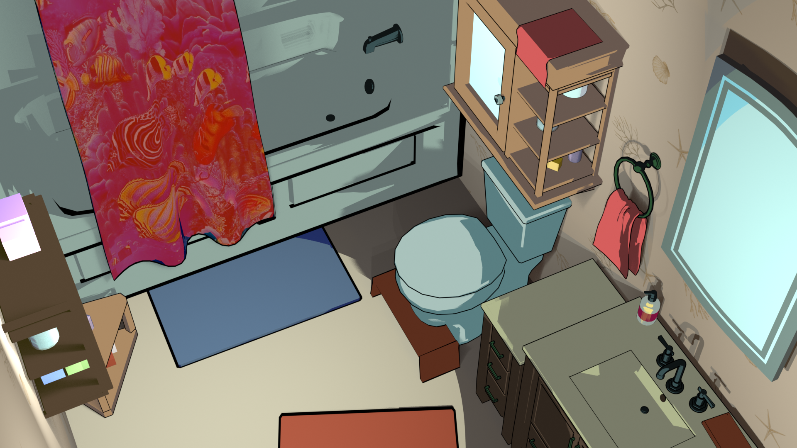
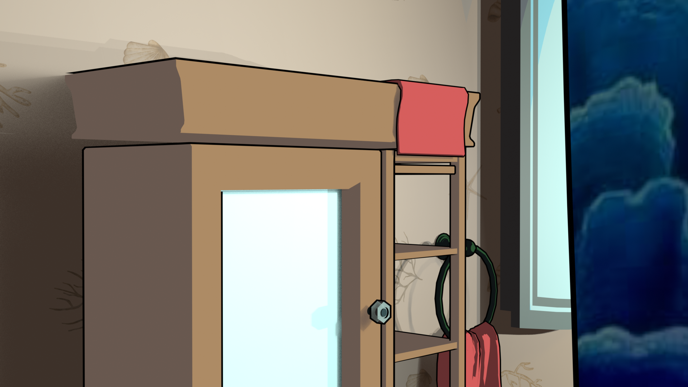
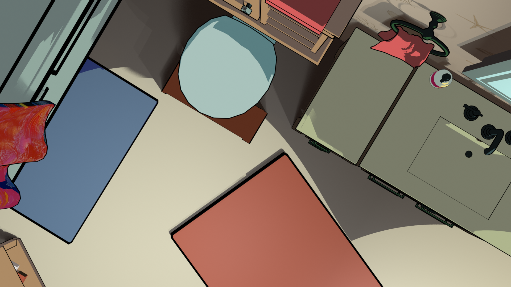

Bathroom, Somewhere is a tiny replica of my own bathroom. I gave myself the challenge to recreate a real space in a very short amount of time, so that I would discover which parts of the space I might find the most memorable or worthy of including. With cartoon-shaded textures, this piece should embody the recognition of a familiar space without an excess of details.
About the Process
I started by taking a panoramic image of the bathroom, then deciding which pieces were necessary to frame a believable stage. This ended up being the tub, sink, toilet, and cabinets. These objects were modeled from a combination of references to the real object and memory. The remaining models were built more for the purpose of brightening the hero assets and offering more context to the environment as a bathroom.
The images in this scene were rendered on my personal laptop. Therefore, I challenged myself to also optimize the resources used by this computer with low polygons, simple textures, and simple lighting. A toon shader worked perfect for this goal. In Blender, I was able to analyze how the scene's lighting was hitting each object, then clamp it between a two colors that would represent highlights and shadows. From there, I offset another underlying black material around the edges of each object to create an 'outline' effect. I took the most creative liberty with the colors and scarce textures. In a way, it is a familiar space painted just differently enough to be uncanny.
Featured Images








